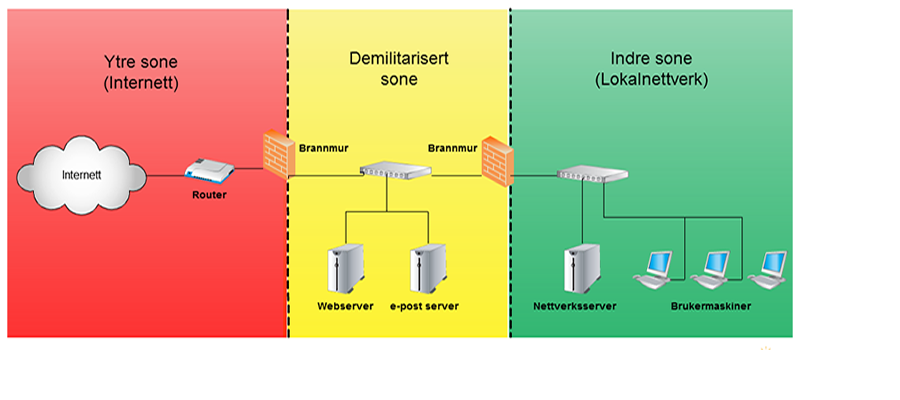

Datasikkerhet er tiltak for å beskytte informasjon. Det inkluderer både beskyttelse mot tap av data og mot ulovlig innsyn, misbruk eller tyveri av informasjon.
Tap av data kan skje på mange måter og vil før eller senere ramme alle datamaskinbrukere. Den vanligste årsaken er rene uhell som enten skyldes uforsiktighet eller manglende kunnskaper hos brukeren. Filer blir slettet ved en feiltakelse, programmer blir avsluttet uten at arbeidet er lagret, eller eksisterende data blir overskrevet. Alt er vanlige feil, men i de fleste tilfellene er ikke skaden større enn at konsekvensene begrenser seg til litt irritasjon og ekstraarbeid.
Oppdater PCen, programvaren OG operativsystemet
Datavirus brukast ofte som eit samlebegrep for uønska programmar som på ein eller annan måte gjer skade på data eller overtar kontrollen over datamaskina.
Det finnes fleire ulike kategoriar av datavirus, men felles for dei er at de spres og installerast på maskina uten brukerens viten og vilje. Ein del datavirus utnytter sikkerhetshol i operativsystemar og populære programmar.
Datavirus delast ofte inn i underkategoriane ormar og trojanske hestar. Forskjellen på dei er måten dei spreiar seg på. Ein orm har ein programkode som gjer at den er i stand til å spre seg sløv, mens ein trojansk hest er betegnelsen på eit virus som skjular seg inni eit anna program og spreies når nokon lastar ned eller kopierar vertsprogrammet.
Datavirus kan vere ganske harmlause og ikkje ha annan funksjon enn å spreie seg, men dei kan og vere svært destruktive og for eksempel slette data, logge kva som gjerast på maskina, sende data til ein angripar eller gje ein angriper kontroll over maskina. Den siste metoden brukast blant anna ved koordinerte angrep mot nettstader, kvar tusenvis av maskinar deltar i angrepet utan at eigaren er klar over det.
Antivirusprogram er eit program på ein datamaskin, som forsøkjer å identifisera, motarbeida og fjerna datavirus og liknande ondsinna programvare (såkalla «malware»).
Antivirus benytter som oftest to forskjellige metoder for dette:
Dei fleste kommersielle antivirusprogrammar benyttar begge metodar for å gje best mogleg beskyttelse. Antivirusprogrammar er i dag ofte ein del av ein større programpakke som i tillegg kan innehalde brannmur, antisøppelpost og antispionprogramvare.
Autentisering er er ein prosess der ein identitet blir verifisert. Vanlegvis vil dette vere ein prosess der ein person skal identifisera seg, og den innebærar at nokon eller noko må avgjere om personen er den han seier at han er. I datasystemar innebærer autentiseringsprosessen ein bevisførsel i form av at brukaren må presentere bevis på at han er den han seier han er.
Den mest vanlege måten å verifisere ein brukers identitet er i dag at brukaren må presentere ein brukernavn/passord kombinasjon som sammanliknast med noko som er lagra i ein brukerdatabase eller liknande.
Denne autentiseringsmekanismen har mange svakheitar som blant anna gjer at den aleine ikkje ansees å være tilstrekkeleg for å få tilgang til sensitive data.
For å forhindre at folk deler passord med kvarandre er den generelle anbefalingen i dag å kreve lange passord, gjerne formulert som setninger i stedet for komplekse passord. I tillegg er det anbefalt at det skal være så lett som mulig for brukeren å opprette nye passord.
Risikoen for dataangrep blir stadig større, og angrepene stadig mer avanserte, det er derfor viktig at din IT-sikkerhet er oppdatert til enhver tid.
I IKT-sammenheng brukes benevnelsen demilitarisert sone (DMZ) om en del av en virksomhets nettverk som brukere utenfor virksomheten kan få tilgang til, men som er skilt fra resten av virksomhetens nettverk med en sikkerhetsbarriere.
Angrepet forsøker å lure deg til å gje fra deg sensitiv og hemmeleg informasjon. Eksemplar på dette kan vere at du får ein e-post som tilsynelatende ser ut som at den er fra banken din som ber deg om å logge inn grunnet oppdateringer i programvaren. Du følger en link der siden du havner på er helt lik som siden til banken din. Når du derimot logger inn skjer det ikke annet enn at du har gitt fra deg informasjonen din.
Identitetstyveri er når nokon skaffar seg, besittar, overførar, benyttar eller fremstår som rette innehaver av eit identifikasjonsbevis eller personopplysningane til ein person for å begå økonomisk svindel, bedrageri eller annen kriminalitet.
Reint praktisk kan eit identitetstyveri for eksempel være å kjøpe varer, åpne ein bankkonto, registrere eit telefonabonnement, eller søke om kredittkort eller lån ved å bruke ein annens identitet enn sin egen.
Hacking betyr å jobbe seg rundt begrensinger og finne snarveier og løsninger innen et felt, ofte forbundet med dataprogrammering.
Hacking kan være ufarlig, og en hacker kan forsøke noe så uskyldig som å endre fargene på Google-logoen i sin egen nettleser for sin egen mestringsfølelse eller bare for gøy. Men hacking er ofte forbundet med datakriminalitet, og snarveiene en hacker tar kan skade andre. Innen hacker-miljøer blir en som driver med ulovlig hacking noen ganger betegnet som en Cracker eller en Black Hat.